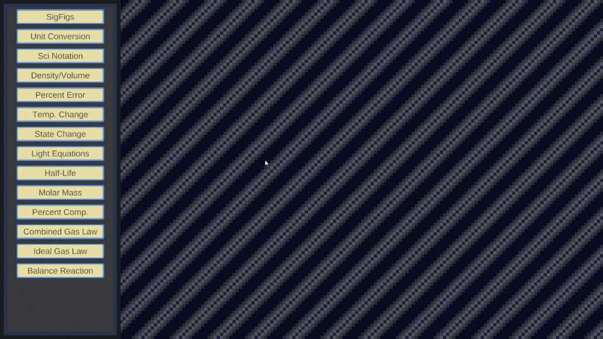
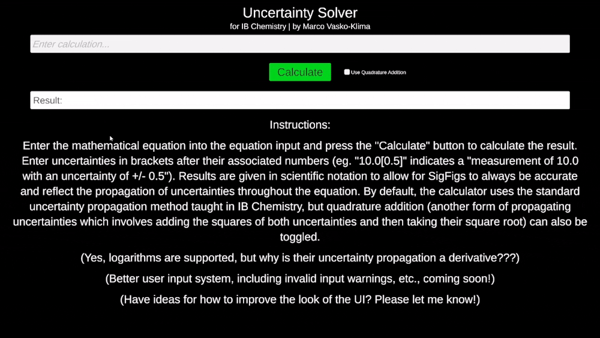

Fun Fact
In order to minimize redundant code, each of the program's specialized calculators falls back on the core significant figure calculator for handling its calculations to maintain accurate significant figures in the results.
Overview
Originating as an idea to develop a simple significant figure calculator to assist with chemistry-related calculations, Chem-Helper now comprises a collection of various specialized chemistry calculators and solvers. These range from a heat transfer calculator to a chemical reaction equation balancer. Each of these calculators handles significant figures in its calculations and rounds results appropriately. An offshoot program under the name of "Uncertainty Solver" was also developed with the purpose of assisting IB Chemistry students with data processing for the internal assessment and any other labs performed in the class. This specialized program specifically handles significant figures as well as uncertainty propagation through calculations which use values obtained from measurements.


Chem-Helper was my first project which required me to create a system for parsing strings and processing user inputs in the form of strings. As such, during its development, I learned how to use regular expressions (regex) for reading and manipulating strings, as well as validating user inputs. The original Chem-Helper program combines regex-based input validation with standard algorithm-based string parsing to handle the core calculator functionality. The Uncertainty Solver offshoot program, developed later, fully relies on a collection of regex's to parse equation strings into a custom tree structure representing the order of the individual mathematical operations, which is then solved recursively starting at the leaf nodes. As of now, the programs include the following functionality:
Fun Fact
The program contains its own internal database with basic data for every element on the periodic table.